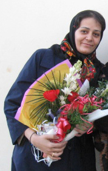

|
|
|
Browsing
Contact Us |
Campaigners |
Face to Face |
Tribune |
Interview |
News |
On the Web |
One Million |
Report
Farsi | Français | German | Italian | Spanish | العربية Also in this section
|
 Mahboubeh Hosseinzadeh All Women are Victims, not Just those in PrisonTranslated By Sussan Tahmasebi Saturday 14 April 2007 "Our husbands are lying in enclosed graves and we are in open graves. We too ceased to live the very day that we killed our husbands." These are the words of a woman who spends her nights on the three story bed across from me. Her nights are filled with nightmares about the death of her husband—a husband she stabbed to death. This is Evin prison—the women’s ward. Nahid and I do not fully comprehend which national security we have undermined, nonetheless with this charge we spend our days in limbo in the midst of these women. Ten of the 16 women with whom we have shared a cell for over a week, are here on charges of murdering their husbands. These women, having lost faith in a legal system that offers no hope and no protection, weave their days to the darkness of the night that lingers behind the tall walls of Evin. If our laws had the capacity to defend women charged with murder, they would not be here now, spending their time idly in waiting for the day that would swallow them—a term used by female inmates to describe execution day. These women, they all seem kind and patient to me. They are women forced into marriages they did not choose, women who were forcibly married off at the age of 13 and 14, women whose husbands were chosen by their fathers…one of these women was forced into marriage through physical violence bestowed upon her by her father, who slapped her repeatedly until she accepted her fate. Until she accepted to marry a man who was 45 years her senior. Another woman continues to have nightmares about that doomed day four years ago, when she took matters into her own hands and murdered her husband. She worries about her daughters whom she turned over the state welfare organization for care. Others too, have similar stories. Woman, mother, requests for divorce, discriminatory laws, murderers…all but one of them is under 40 years of age. She asks "why doesn’t anyone listen to our problems or pains?" "Where was the judge when my husband forced me onto the streets, into prostitution, in an effort to earn enough money to support his habit of addiction? What is one to do? Which laws were meant to support me? Which laws were intended to save me? Why didn’t the judge listen to my pleas? I grew weary. The law provided me with no refuge. I defended myself. Yes! I killed him!" Another woman explains "my father said that we will lose face. I cried. I asked my father didn’t you marry me off by force at age 13? Now I want a divorce. My father refused. But when I saw my husband that night with another woman, in my own bed, I could no longer take the abuse." The victims are not just the women with whom I share a cell. The victims are all women in this land. Today a few judges came for an official tour of the prison. Nahid was in visitation with her family when they came to our ward. The judge pokes his head into the cell and asks "are there any problems in this room?" It seems that the only problems with which female inmates could be faced are nutritional. He finds out that I am a reporter, so he goes further to ask about our other problems. I explain that I am charged with "actions against national security through spreading of propaganda against the State." He says that my presence in prison, given the fact that they have processed my paper work for release on a third party bail guarantee is illegal. Enthused, I ask his name so that I can quote a reliable source to counter our state of limbo and uncertainty, during these days when the judge assigned to our case does not feel the obligation to provide a response to our family or to our lawyer. Immediately the visiting judge retreats and explains: "there is no need to know my name. I should explain that the judge in charge of your case has the authority to keep you in prison for as long as he sees fit!" And I laugh. He does not even have the courage to speak his name and to defend his opinion. A few other judges visiting the prison become excited. One speaks of Mehrangiz Kar and her effort to defend women’s rights. My heart aches and I feel a sadness as vast as all the days that Mehrangiz Kar, Shirin Ebadi and other women like them have spent in Evin prison, on charges of having defended women’s human rights. One of the judges pulls me to a corner to ask how I am being treated by the other inmates. Are we bothered here, he inquires. I recall the smoke filled cells of Ward One of Evin Prison (the punishment ward, as it is infamously referred to) and the immense feeling of insecurity we felt during our time there. I remember having stood at the foot of the stairs in Ward One, when several inmates began beating a woman, pushing her down the stairs. Several female inmates beat this woman, to an inch of her life, while others held her hands so that she could not escape. I watched frightened and stunned. Injured and fearful, she gazed at the eyes of on lookers for help, but there was no liberator or even prison guard present to provide her with a reprieve. I wanted to tell the man about a girl, who wailing, in this very ward, smashed the television set in her cell to the ground. I wanted to speak about a girl whose scar filled arms, a testament to repeated attempts at suicide, shattered the glass of a window with her head. And this time, the prison guard was present, only to faint at the sight of this violence… But instead I only told the judge that he should visit Ward One of Evin prison. To date, no reporter has managed to visit this Ward, and no reports about the condition of prisoners in this section of Evin have been prepared. Of course, according to the women in Ward One, no judge has ever visited this section of Evin prison either. The doors to this section remain perpetually closed—and even judges do not bear witness to the atrocities that take place there. . My dear mother, my sister and her small child have come to visit me. Nahid had a chance to speak with my mother as well, and heard her lament about the worries of my aging father. My nephew Soheil is a year and a half. He places his small hands on the window of the cabinet that divides us, and laughs out loud. My sister cries. Her tears are warranted. She is spending her last days with her child. After 4 months of uncertainty, with the unrelenting assistance and support of her lawyer, she has finally managed to get her husband to agree to a divorce, on condition that she give up all her rights, even rights to her child—this very small child, whose laughter and play had interrupted the silence of my mother’s home over the past four months. My sister worries for her child, and I feel more powerless than before when faced with her tears. She is only 23 years old. "I too am one of the victims of these laws" explains my sister. "From today onward, I will start collecting signatures in support of the Campaign. I will collect so many signatures, so that these laws finally change." The female inmate who has now started to record her own experiences in a small diary, pulls me aside and asks: "can I help you in collecting signatures for the Campaign?" She wants me to use whatever means possible to get her a signature form, so that women who are condemned to spend their days at Evin prison, too can have the opportunity to create change for others. So that with their individual signatures they can bring hope to other women. And this reminds me of the last question asked by my interrogator before I was brought here "your demands in the Campaign, including banning of polygamy, equal rights to blood money and testimony, are in contradiction to the foundations of Islamic jurisprudence and the foundations of the Islamic Regime. Given these facts, will you continue to ask for changes in the laws?" In response to this question, I wrote: "Yes! I know that our demands are not in contradiction to Islam." And today, after this experience, I am more determined than ever and I write: "I ask for changes to these discriminatory laws. I ask them in an effort to honor the dignity of all the women in my country." |